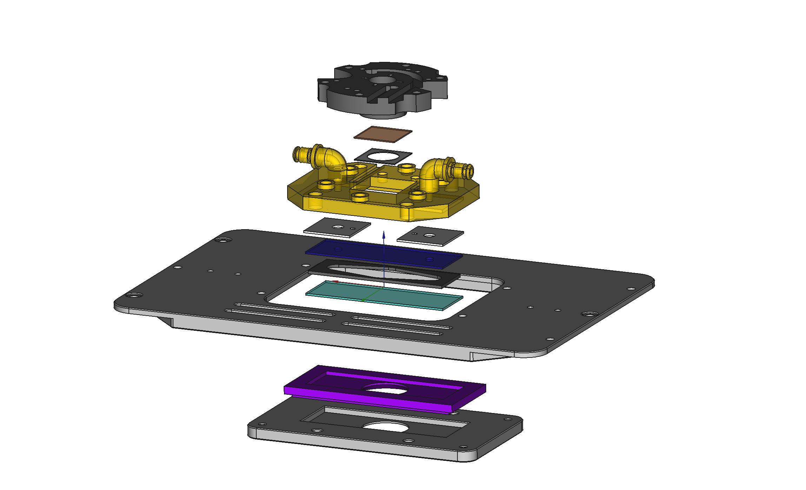

The goal of my master thesis is to build an experiment that makes it possbile to study the thermophoresis effect – induced particle motion by a thermal gradient. After testing the setup by repeating experiments, the influence of particles geometry will be studied by measuring the movement of ellipsoids.
Soft Matter Experiments
Statistical Physics
FreeCAD / Python / Laboratory work
Thermophoresis is the movement of molecules or particles in response to temperature differences. It can occur towards hot or cold regions, known as thermophilic or thermophobic particles. This process is important in drug development, chemical fabrication, and biomolecular interactions. However, a comprehensive theory of thermophoresis is still lacking due to various parameters influencing its direction and intensity. Particle shape, especially thermophoretic torques, remains largely unexplored. To address this, we aim to design a microfluidic setup for simultaneous thermophoresis and optical microscopy experiments. Our setup will confine the sample, create a controlled temperature gradient, and allow optical access for imaging particle motion. We will focus on finding the optimal working point and develop a solution to precisely control the temperature gradient using two independent PID temperature control loops. Initially, we will validate the setup using spherical polystyrene (PS) particles in water with known thermophoretic mobility. Subsequently, we will study translational and rotational motion of ellipsoidal PS particles using a custom-made particle stretcher, examining the coupling between the two motions based on particle size and concentration.
The thermal gradient that is created is vertical and needs to have a clear path for a microscope objective. The idea is to sandwich the sample between a resistive heater and a cooled sapphire microscope slide. The heater is an ITO coated cover slide that increases in temperature when a current is supplied. The sapphire microscope slide is water cooled by an external control unit.
The Project is still ongoing, therefore this page is still in progress. There is a major update planned, since new ideas popped up. You learn most while working practically!